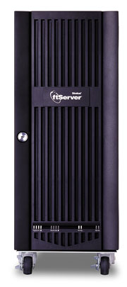
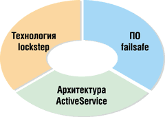
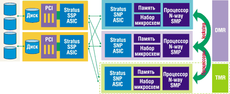
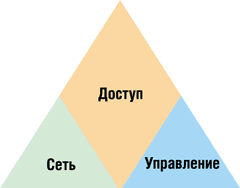
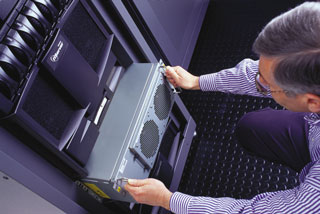

Сергей Петраков
У сотрудников ИТ-подразделений, отвечающих за эксплуатационную поддержку технических средств, сегодня есть масса возможностей для построения высоконадежных систем - на рынке представлены серверы с высокой избыточностью, кластеры высокой готовности и другие отказоустойчивые решения. Выбор в пользу какого-то одного решения обычно предполагает компромисс между приемлемым уровнем готовности и начальной стоимостью системы, а также затратами времени и усилий на ее внедрение и эксплуатационную поддержку.
Компания Stratus Technologies (http://www.stratus.com) - один из лидеров на рынке отказоустойчивых технологий. Отказоустойчивость в компьютерах Stratus достигается благодаря оригинальному архитектурному решению, при этом немалую роль в непрерывном функционировании компьютерной системы в целом играет политика компании в области обслуживания пользователей. Компьютеры Stratus находят широкое применение в телекоммуникационных, банковских, биржевых и многих других решениях.
|  | Сервер Stratus ftServer 3300.
|
Основы архитектуры
Для максимально надежной защиты сервера от сбоев требуется комплексное решение, включающее аппаратные средства, ПО и сервис. Системы Stratus ftServer включают в себя функции Continuous Processing - плод двадцатилетнего опыта разработок в области обеспечения непрерывного функционирования наиболее требовательных и ответственных приложений. Все элементы Continuous Processing работают согласованно, не просто сокращая до минимума незапланированные перебои в работе, а практически полностью исключая их. Предотвращение простоев - это ключевое отличие архитектуры систем ftServer от традиционных серверов и кластеров высокой доступности.
Отметим, что для реализации подобной отказоустойчивости клиенту не требуется вносить никаких изменений в стандартные приложения. Это обеспечивает существенное преимущество по сравнению с кластерами, для которых нужно создавать сценарии переключения при отказе, проводить их тестирование и модифицировать приложения в расчете на кластерную конфигурацию.
Функции Continuous Processing реализуются в системах ftServer с помощью трех основных элементов - технологии lockstep, ПО failsafe и архитектуры ActiveService (рис. 1).
|  | Рис. 1. Основные элементы архитектуры Stratus Continuous Processing.
|
Технология lockstep использует дублированные отказоустойчивые вычислительные компоненты, которые обрабатывают одни и те же команды в одно и то же время. При сбое компонента его дублер функционирует как активный резервный элемент, продолжающий нормальную работу системы и предотвращающий ее простои. Система также обнаруживает и исправляет неповторяющиеся аппаратные ошибки, которые могут вызвать сбой в работе ПО.
Программный комплекс failsafe, дополняющий технологию lockstep, предотвращает многие программные ошибки. Благодаря этому машины ftServer обрабатывают большинство ошибок прозрачно для ОС, связующего и прикладного ПО. Для обеспечения непрерывной защиты и целостности данных, находящихся в оперативной памяти, функции управления и диагностики собирают информацию о работе ПО, анализируют ее и сообщают о любых возникших проблемах. Кроме того, в failsafe входят "усиленные" драйверы устройств, которые, как утверждается, значительно повышают надежность работы в среде Windows.
Комбинация функций ActiveService обеспечивает так называемую встроенную обслуживаемость. Системы Stratus ftServer непрерывно ведут мониторинг своих операций. При обнаружении сбоя сервер корректно локализует его и автоматически инициирует звонок в центр поддержки Stratus.
Функции удаленной поддержки, реализуемые с помощью адаптера ftServer Access Adapter и глобальной сети ActiveService Network, позволяют сервисным инженерам Stratus диагностировать и решать 95% проблем в онлайновом режиме. При необходимости система автоматически заказывает для себя запасные части, заменяемые в горячем режиме, гарантируется их доставка в течение 24 ч в основные мировые центры. Пользователь может сам легко установить эти компоненты, при этом работа системы ftServer не прерывается. Защищенная утилита ActiveService Manager на базе Web позволяет Stratus совместно с авторизованными производителями быстро разрешать проблемы.
Технология lockstep
Чтобы исключить единые точки отказа, в семействе ftServer используется дублирование компонентов, причем не только процессоров, дисков и вентиляторов, но и системных плат, памяти, шин и адаптеров ввода-вывода. Это обеспечивает продолжение работы даже в случае неисправности важного компонента. Аппаратные сбои автоматически устраняются системой ftServer без задержки на переключение и без потери данных.
Функции lockstep гарантируют, что все ошибки (в том числе и неповторяющиеся) будут обнаружены и при сбое модуля "процессоры - память" не произойдет прерывания в работе системы или потери данных или состояния.
Серверы ftServer снабжены единой консолью управления и выполняют одну копию каждого пакета ПО, что сокращает затраты на лицензирование ПО и упрощает администрирование по сравнению с многоузловыми кластерами.
Отказоустойчивая подсистема ввода-вывода физически отделена от подсистемы "процессор - память" (рис. 2). Аппаратная логика реализована в виде заказных микросхем ASIC - Stratus North PCI (SNP) и Stratus South PCI (SSP). Эти микросхемы выполняют роль PCI-моста между процессором и вводом-выводом, обеспечивая обнаружение основных ошибок, изоляцию сбоев и синхронизацию архитектуры lockstep. "Северный" мост SNP содержит основные интерфейсы PCI, функции управления прерываниями и логику порядка выполнения транзакций. "Южный" мост SSP содержит логику голосования, вторичные интерфейсы PCI и регистры ошибок. Мосты соединяют систему с резервированными модулями процессора и ввода-вывода через пассивную шину, реализованную в виде кабелей или объединительной панели.
|  |
| Рис. 2. Схема технологии lockstep.
|
Отказоустойчивость ввода-вывода повышается за счет дублирования шин PCI, адаптеров и устройств ввода-вывода. В базовой конфигурации ftServer имеются две независимые шины PCI (можно применить две дополнительные шины). Дублируются также PCI-адаптеры SCSI, Ethernet, удаленного администрирования и Fibre Channel. Во внутренних дисках применяется зеркалирование (RAID 1), при котором каждый диск подключается к двум независимым шинам SCSI.
Благодаря этому для любой логической операции ввода-вывода, включая операции с внутренними и внешними дисками, доступны несколько маршрутов. При любом сбое операции ввода-вывода она повторно выполняется с использованием альтернативного маршрута, что гарантирует успешное завершение.
Резервирование DMR и TMR
В системах ftServer стандартно используется режим двойной модульной избыточности (DMR), при котором задействуются два блока "центральный процессор - память" (системная плата). Системы DMR предназначены для получения доступности на уровне "пяти девяток" (99,999%).
Для некоторых моделей ftServer как опция предлагается резервирование с тройной избыточностью, TMR. Здесь для дополнительного повышения надежности в систему добавляется третий блок "центральный процессор - память". Если в конфигурации TMR произойдет сбой процессора или памяти, то система автоматически перейдет в режим DMR - полностью отказоустойчивого сервера с готовностью "пять девяток". Системы TMR обеспечивают самый высокий уровень надежности для пользователей, которые работают с критически-важными приложениями.
Как говорилось выше, все системные платы работают в режиме lockstep с синхронизацией от одних системных часов. Логика обнаружения и изоляции сбоев сравнивает сигналы ввода-вывода на выходе всех системных плат, и любое несовпадение воспринимается как признак ошибки. Системы DMR используют логику обнаружения ошибок каждой системной платы, чтобы выяснить, в какой из них произошел сбой. Если сигнал об ошибке платы не обнаружен, то программный алгоритм определяет, какую плату нужно вывести из работы. В системах TMR для изолирования неисправной платы используется механизм голосования с тремя участниками.
Применение стандартных компонентов
Архитектура ftServer дополняет преимущества традиционной архитектуры "дублирование и резервирование", делая ее доступной на более простых конструкциях с меньшим числом компонентов. Применение стандартных модульных элементов не только сокращает стоимость систем Stratus, но и ускоряет разработку новых продуктов из серии ftServer и вывод их на рынок.
Продукты ftServer использует все преимущества стандартных компонентов и конструкции Intel-серверов. Их основные отличия от обычных стандартных серверов - отделение в ftServer ввода-вывода PCI от остальных компонентов системной платы, а также реализация на аппаратном уровне обнаружения отказов с помощью разработанных Stratus заказных интегральных микросхем ASIC.
Обеспечение отказоустойчивости при уменьшении числа компонентов удешевляет продукцию, но не уменьшает производительность и доступность системы.
ПО failsafe
Системы ftServer поддерживают ОС Microsoft Windows 2000 Advanced Server, используя при этом дополнительные программные функции доступности, разработанными Stratus. Защита от отказов на программном уровне устраняет известные источники сбоев системы и приложений, сокращая до минимума простои при ремонте и обслуживании, и обеспечивает сохранность данных в оперативной памяти. В частности, ПО защищено от неповторяющихся аппаратных ошибок, а "усиленные" драйверы предотвращают программные сбои. Кроме того, информация о проблемах ПО собирается, анализируется и корректируется.
Разработанные Stratus программные усовершенствования никак не затрагивают исходный код ОС. В результате системы ftServer обеспечивают 100%-ную совместимость интерфейса Application Binary Interface (ABI) с Windows 2000. Все системы ftServer успешно прошли квалификационные тесты Windows и включены в список Microsoft Hardware Compatibility List (HCL). Это гарантирует выполнение любого приложения Windows 2000 на системах Stratus ftServer.
Неповторяющиеся аппаратные ошибки
Оборудование и системное ПО ftServer предназначено для обнаружения, изоляции и автоматического исправления неповторяющихся ошибок, а также ошибок на аппаратном уровне. Поскольку обработка ошибок - хорошо известное слабое место архитектуры ПО, то маскирование неповторяющихся и аппаратных ошибок устраняет источники многих проблем. Оборудование и системное ПО ftServer обнаруживает и обрабатывает неповторяющиеся аппаратные и программные ошибки, которые в кластере и обычных серверах вызывают проблемы на уровне ОС, связующего и прикладного ПО.
"Усиленные" драйверы
Хорошо известно, что многие сбои в работе ОС Windows вызваны ошибками в драйверах устройств. По оценкам самой Microsoft, именно из-за ошибок драйверов происходит 30% всех перезагрузок Windows NT 4. В ОС Windows 2000 драйверы стали значительно надежнее благодаря новым программам тестирования и сертификации, однако общая доля проблем, связанных с драйверами, не уменьшилась.
ПО Stratus ftServer решает эту проблему надежности среды Windows с помощью так называемых усиленных драйверов. При сбое адаптеры ввода-вывода изолируются от остальной системы. В адаптерах реализованы функции онлайновой диагностики и сервисный интерфейс, соответствующий модели драйверов Microsoft Windows Management Instrumentation (WMI).
Специалисты Stratus либо лицензируют исходный код драйвера, либо совместно с производителем драйвера реализуют дополнительную функциональность. Для поддержания доступности на максимальном уровне Stratus рекомендует использовать в системах ftServer только PCI-карты с усиленными драйверами устройств.
Для усиленных драйверов устройств характерны следующие функциональные усовершенствования:
- полная поддержка вставки и замены адаптеров в горячем режиме;
- прозрачное переключение при отказе (исключение составляют ленточные накопители и асинхронные коммуникационные адаптеры);
- возможность онлайновой диагностики;
- поддержка онлайнового обновления микрокода;
- мониторинг и составление отчетов с помощью WMI.
Анализ и исправление проблем в ПО
Даже принятие специальных профилактических мер не может полностью исключить проблемы с ПО. Архитектура ftServer обеспечивает ряд преимуществ в решении таких проблем, позволяя точно разграничить программные и аппаратные конфликты. Поскольку системы ftServer автоматически обнаруживают, изолируют и устраняют неповторяющиеся аппаратные ошибки, категория проблемы определяется сразу. Это значительно ускоряет ее разрешение и делает его более эффективным. К тому же архитектура ftServer включает усовершенствования, сокращающие риск программных сбоев.
Автоматическая перезагрузка
В тех маловероятных случаях, когда сбой ОС все же происходит, системы ftServer выполняют автоматическую перезагрузку и сохраняют информацию об отказе в одном из дублированных модулей "центральный процессор - память". Дамп содержимого памяти ядра автоматически считывается после восстановления нормальной работы системы и приложений. При этом не требуется сложная операция передачи содержимого дампа - системы ftServer поддерживают удаленный анализ сбоев через сеть Stratus ActiveService Network.
ПО мониторинга ftServer идентифицирует многие из ошибок ПО и передает отчеты о них, что позволяет предпринять нужные действия до того, как проблема сказалась на работе приложений. В числе прочего это ПО также отслеживает конфигурацию системы и номера версий для идентификации возможной несовместимости.
Системное ПО для переключения при отказах
Специальное системное ПО, разработанное в Stratus для семейства ftServer, обеспечивает переключение при отказах. Программы этого комплекса осуществляют мониторинг и управление сервером, позволяют применять удаленное обслуживание и поддержку, а также реализуют другие эффективные функции повышения доступности. Основные компоненты комплекта перечислены ниже.
ftServer Management Console (ftSMC) - подключаемый модуль для стандартной консоли Microsoft Management Console (MMC). Он реализует пользовательский интерфейс администратора для конфигурирования, управления и создания детальных отчетов о состоянии систем ftServer. Модуль выполняется локально на любой системе ftServer или удаленно на любой системе Windows 2000. Как локальные, так и удаленные системы ftServer могут управляться любой копией ftSMC.
Software Availability Manager (SAM) - инструментарий, который включает сервис Windows Service, выполняющийся при запуске системы, и подключаемый модуль для Microsoft Management Console (MMC). Сервис SAM ведет мониторинг работы критических ресурсов системы ftServer и состояния пользовательских приложений. Подключаемый модуль SAM можно настроить на посылку сообщения по электронной почте, на выполнение программы с учетом состояния приложений или на запись сообщений в журнал Event Log.
Агент Simple Network Management Protocol (SNMP)- расширяет возможности агента Microsoft SNMP Agent и позволяет консолям интегрированного управления других производителей выполнять мониторинг систем ftServer. Агент ftServer SNMP посылает оповещение в виде ловушки SNMP, если компонент системы изменил свое состояние на следующее: broken (неисправен), fixed (починен), removed (снят) и inserted (вставлен). Файл ftServer MIB позволяет программным пакетам интегрированного управления понять предупреждения Stratus.
Поддержание целостности данных в памяти
Данные в оперативной памяти интенсивно используются во многих мощных критически важных приложениях, а их потеря приводит к потере транзакции или дополнительному простою. Системы ftServer защищают данные в памяти с помощью архитектуры lockstep, предусматривающей сохранение содержимого оперативной памяти как минимум в двух отдельных аппаратных компонентах.
При работе с обычными Windows-серверами после зависания системы пользователи должны сделать трудный выбор - либо не запускать приложения до тех пор, пока не будет сохранен дамп памяти для последующего анализа, либо сразу включить приложение, но при этом потерять те данные, которые могли бы помочь устранить повторение таких сбоев. При работе с ftServer эта дилемма устраняется - пользователи смогут сократить до минимума простои приложений и сохранить диагностическую информацию.
Снятие онлайнового дампа памяти основано на дублировании оборудования в отказоустойчивых системах ftServer. При программном сбое ОС ftServer выводит один из резервированных модулей "процессор - память" из работы и восстанавливает нормальный режим работы остальной части системы. В результате работа критически важного сервера быстро восстанавливается, данные сохраняются, по ним можно выяснить причину проблемы.
После восстановления нормальной работы системы и приложений с отключенного модуля "процессор - память" снимается стандартный дамп памяти ядра, затем модуль возвращается к обычной работе с дублированием. Система автоматически звонит в центр Stratus Customer Assistance Center (CAC) и передает туда отчет о проблеме. С помощью адаптера ftServer Access PCI, встроенного в архитектуру Stratus ActiveService Architecture, специалисты Stratus по сервисному обслуживанию немедленно начинают диагностировать дамп системы и управляют решением проблемы.
ftMemory RAM Disk
При использовании факультативно поставляемого ПО ftMemory RAM Disk данные в памяти могут быть защищены и от программных сбоев, в том числе и сбоев ОС. В отличие от других виртуальных дисков RAM, эта программа сохраняет состояние нужного участка памяти в течение сбоя системы и перезагрузки, так что работу приложений и бизнес-операции можно возобновить без потери транзакций. Столь удобная функция выживаемости позволяет вместо хранения данных на диске использовать данные в памяти (для тех приложений, которым нужна такая возможность).
Функция ftMemory RAM Disk использует преимущества отказоустойчивой архитектуры системы ftServer, в которой имеется дублирование памяти, обеспечивая защиту всего содержимого ОЗУ от сбоев аппаратных компонентов. Системное ПО Stratus защищает данные ftMemory от сброса при перезапуске системы и сохраняет исходное состояние содержимого памяти. Для защиты содержимого памяти при сбое питания систему ftServer необходимо оборудовать бесперебойным источником питания (ИБП). Если ИБП выдает сигнал о разрядке батарей и инициирует отключение, то содержимое ftMemory RAM Disk автоматически копируется на диск. Данные из памяти также могут записываться на диск при обычном отключении Windows. При включении питания системы данные с диска записываются обратно в память и становятся доступными для приложений.
Тестирование
В компании Stratus применяется процедура тщательного тестирования всей системы, включая опции оборудования и ПО, в различных конфигурациях, в том числе и максимально сложных. Системы тестируются при экстремальных нагрузках на процессоры и системы ввода-вывода; а условия возникновения ошибок повторно моделируются.
Архитектура ActiveService
Как и при разработке других компонентов систем ftServer, при создании архитектуры ActiveService ставилась задача обеспечить обнаружение и разрешение проблем до того, как они приведут к простою системы. Эта архитектура сочетает автоматическое обнаружение и изоляцию сбоев, интегрированную удаленную поддержку call-home и онлайновую замену компонентов, т. е. встроенные функции обслуживаемости, которых нет у других серверов.
Концепция архитектуры ActiveService реализуется начиная с проектирования оборудования и расширяется с помощью глобальной сети Stratus ActiveService Network и ActiveService Manager на основе Web (рис. 3).
|  | Рис. 3. Основные составляющие Active Service Architecture.
|
Встроенная обслуживаемость
Системы ftServer обеспечивают первый уровень поддержки клиентов. ПО сопровождения сервера работает прозрачно, постоянно проводит мониторинг и диагностику событий в системе, составляет отчеты о них, аккуратно изолируя сбои на уровне компонента. В случае ошибки или сбоя оборудования ftServer автоматически изолирует вызвавшие их условия и продолжает работу на втором резервном компоненте.
Сервер автоматически посылает отчет о любых нештатных ситуациях в центр Stratus Customer Assistance Center через защищенное коммутируемое соединение. Глобальная сеть ActiveService Network (раньше называвшаяся Stratus Service Network, или SSN) обеспечивает всемирную инфраструктуру для удаленного доступа к любой системе клиента. Авторизованные специалисты по поддержке могут круглосуточно в удаленном режиме проанализировать критичные проблемы без поездки в офис клиента. На практике сервисные инженеры Stratus способны удаленно диагностировать и устранить проблемы более чем в 95% случаев.
В тех ситуациях, когда для обслуживания требуется замена компонента, система ftServer автоматически оформляет заказ на нужный компонент, заменяемый в горячем режиме. В большинстве случаев он доставляется на следующий день. Поскольку замену компонентов ftServer, как правило, вполне в состоянии провести сами клиенты (принцип Customer Replaceable Unit, CRU), для замены не требуется вызывать сервисного инженера.
Система ftServer автоматически включает установленный новый компонент и синхронизирует его для lockstep с дублирующим устройством. В течение всего этого процесса система и приложения продолжают работу в нормальном режиме.
|  | Замена блока в сервере.
|
ftServer Access Adapter
В системе ftServer также реализованы возможности управления типа out-of-band с помощью дублированных адаптеров ftServer Access PCI Adapter (ftSAA), обеспечивающих удаленную связь между Stratus ActiveService Network и системой клиента независимо от ее состояния. Устройство ftServer Access позволяет эксплутационному персоналу или сервисных инженерам удаленно включать и отключать питание системы, выполнять ее сброс и перезагрузку и управлять защитой входящей и исходящей связи через ActiveService Network. Для повышения надежности адаптеры выполнены в виде одноплатных компьютеров с независимым питанием и сетевыми соединениями.
ActiveService Network
Сервисная инфраструктура Stratus, работающая круглосуточно и без выходных, должна обеспечивать максимальную продолжительность непрерывного функционирования критически важных приложений. Сеть ActiveService Network поддерживает защищенную непрерывную связь между серверами и техническими специалистами Stratus и CAC по всему миру.
ActiveService Network позволяет проводить онлайновый круглосуточный мониторинг системы и удаленное устранение неисправностей независимо от расположения клиента, что практически полностью устраняет задержки и затраты, неизбежные при обслуживании с выездом в офис клиента.
Авторизованные сервисные инженеры используют ActiveService Network для доступа к системам ftServer клиента, их анализа и конфигурирования. В этой сети используются такие мощные средства удаленного управления, как удаленный сброс, удаленная консоль, сбор и хранение информации, функции безопасности.
Технологии диагностики и анализа позволяют ActiveService Network определить причину сбоя и загрузить журнал регистрации ошибок и дампы системы. Сервисные инженеры Stratus могут также использовать сеть для инсталляции по мере необходимости программных "заплаток", диагностических процедур и "горячих" исправлений.
ActiveService Manager
Инструментарий ActiveService Manager дополняет возможности ActiveService Network. Он включает сервисные утилиты на базе Web, предназначенные для поддержки онлайнового управления вызовами для систем ftServer, - предусмотрено круглосуточное взаимодействие в режиме реального времени с центром поддержки Stratus CAC. ActiveService Manager позволяет клиентам просматривать талоны вызовов, которые система ftServer генерирует автоматически, а также создавать и обновлять вызовы поддержки, которые сразу же направляются к соответствующему сервисному специалисту Stratus. Кроме того, ActiveService Manager показывает полную историю инцидентов систем Stratus на предприятии клиента.
Поскольку крупномасштабное развертывание создает дополнительную нагрузку на ИТ-отделы, служба Stratus Worldwide Services предлагает различные услуги, ориентированные на максимальное повышение продолжительности бесперебойной работы и производительности компьютерных решений ftServer.
Центр Stratus Center for Fault-Tolerant Computing выполняет тестирование на производительность, совместимость и готовность, в том числе и для продуктов других компаний и приложений клиентов, а также предоставляет услуги портирования. Эти сервисы помогают клиентам внедрить надежные и эффективные по цене решения без привлечения дополнительных технических специалистов или заключения контрактов с несколькими фирмами на проектирование и инсталляцию приложений и инфраструктуры.
***
Семейство ftServer компании Stratus - это практичное и доступное по цене решение для достижения высокого уровня доступности в среде Windows. Для руководителей, отвечающих за принятие решений, очень важен тот факт, что функции Stratus Continuous Processing, работающие без вмешательства человека, упрощают развертывание системы, позволяя сократить ее стоимость, уменьшить затраты на текущую поддержку и потери из-за незапланированных простоев.